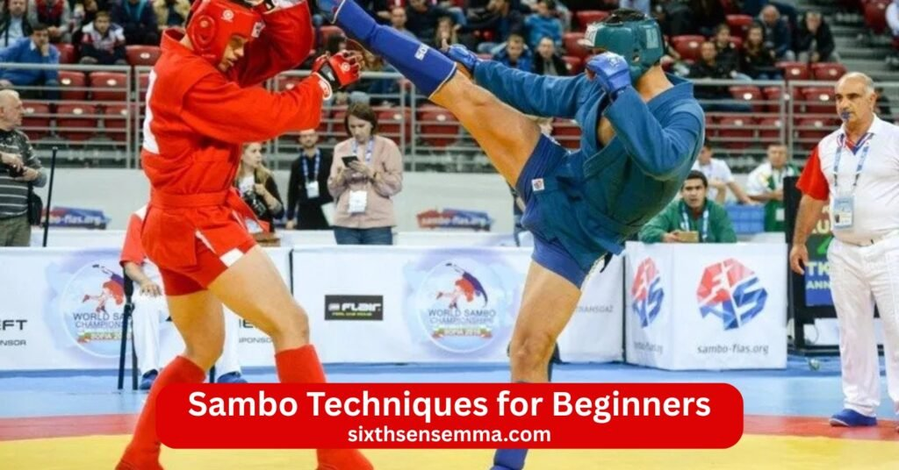
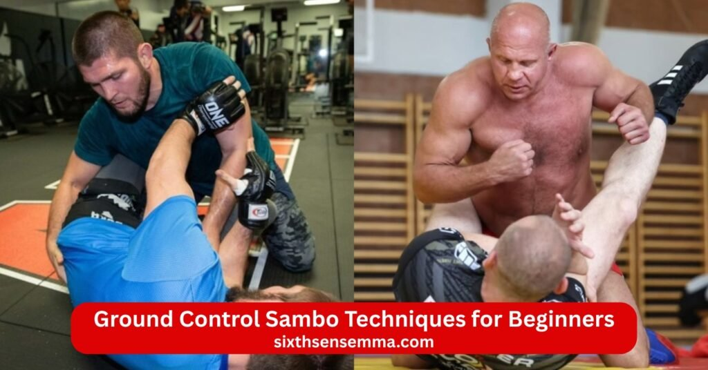
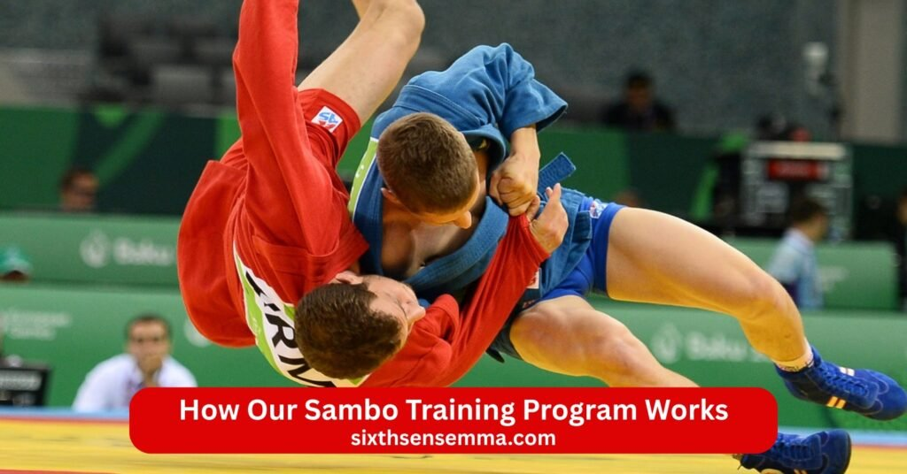

Sambo Techniques for Beginners Professional Training & Self Defense Program

Sambo Techniques for Beginners offer a smart and powerful way to start a complete martial art and combat sport that blends wrestling judo and practical fighting skills. Whether you want real self defense better fitness or just a new challenge sambo gives you tools that work on the street in mma or on the competition mat. This program at Sixth Sense MMA makes learning easy and safe for complete newcomers. Sambo relies on leverage timing and smart positioning so anyone can learn no matter your age size or current fitness level.
Sambo Techniques for Beginners – Program Overview
Sambo brings together wrestling power from freestyle and Greco Roman styles with judo precision to form a complete martial art and combat sport. This system started in the Soviet Union through the work of Vasili Oshchepkov and Viktor Spiridonov who combined different fighting methods for practical use. Sambo includes standing fights and ground work so practitioners gain a well rounded skill set that works in competition self defense or mixed martial arts. Beginner programs focus on building strong foundations step by step. A coach leads classes at a sambo academy with clear progress from basic grips to full techniques.
Beginner Friendly Sambo Training Structure
Sambo training drills follow a logical order that suits new students. Sessions open with light movement to warm joints and muscles then shift to stance work and foot placement. Coach shows one technique at a time with slow repetition so everyone copies the motion correctly. Pairs practice controlled exchanges where partners help each other feel the technique without full resistance. Classes mix standing drills with basic ground positions to connect the whole system. Sambo builds from simple actions like clinch entries to more complex chains over weeks. Training drills repeat grips off balancing and escapes to make them automatic. Sambo includes progressive sparring at low intensity where students test moves in live but safe settings.
Safety Focused Learning for New Students
Every beginner learns proper falling techniques called ukemi right away to land softly and avoid harm. Coach watches closely during every drill and stops action if form slips. Partners agree on speed and power before starting so no one gets surprised. Tapping out happens early and often during holds to stop pressure before it hurts. Sambo stresses clean technique and body awareness to prevent common injuries like twisted knees or strained shoulders. Classes use mats with good cushioning and require sambo gear beginners like kurtka jacket shorts and shoes for grip and protection. Sambo self defense tips teach awareness of surroundings and calm responses under stress.
Basic Sambo Standing Techniques
Standing phase forms the heart of sambo techniques because quick takedowns set up everything else. Students work on closing distance safely while keeping balance. Sambo blends explosive entries with controlled finishes to drop opponents to the mat. These moves prepare for ground fighting or direct control.
Grip Control and Balance Management
Grip starts all action in sambo. Students grab sleeves collars or arms on the kurtka to dictate movement. Strong grips control posture and stop opponent attacks. Balance management breaks the partner’s base by pulling or pushing in directions they cannot resist easily. Sambo teaches kuzushi or off balancing as the key before any throw. Good control leads to smooth sambo throws or clinch setups. Practice focuses on feeling weight shifts and reacting fast to keep advantage.
Simple Throws for Beginners
Hip throw uses the body as a lever to lift and flip the partner over the hip. Step in close turn hips and pull down while driving legs up for power. Timing matters most to catch the opponent off guard. Ouchi gari reaps the inside leg with a hooking motion while pulling the upper body forward and down. Grip high and low then drop low to sweep the leg out. Goshi adds hip snap to variations for extra lift and control. Uchi entries set up reaps by stepping inside and turning. These beginner sambo throws work against many sizes because they use body mechanics over brute force. Sambo throws feel strong and smooth with correct setup and practice.
Beginner Sambo Takedown Techniques
Sambo shines in takedowns because the art mixes judo style throws with wrestling control to bring fights to the mat fast. Beginner sambo throws and entries focus on safe repeatable actions that set up strong ground positions. Sambo techniques teach students to close distance break balance and finish the drop without wild risks. Every takedown starts from grip work and leads to dominant spots on the floor. Sambo fighter habits form here since quick stands to ground transitions define the style. Sambo makes these moves practical for combat sambo basics or sport rules.
Safe Takedown Drills
Coach demonstrates each entry at slow speed first then adds light resistance. Students practice hip throw by stepping in turning hips and lifting while partner cooperates on the fall. Ouchi gari drill starts with grip on sleeves then hooks the inside leg while pulling down. Partners roll through the motion together to feel the sweep safely. Goshi variations repeat with emphasis on hip placement and arm pull. Uchi entries train stepping inside for reaps or trips. Sambo training drills use progressive steps like shadow practice alone then partner work then light live attempts.
Controlling the Opponent After Takedown
Controlling the opponent after takedown keeps advantage right away. After the drop students move to side control or mount fast to pin and limit escapes. Sambo stresses immediate pressure on the chest or hips to stop stand ups. Hands stay active to block arms while hips drive down for weight. Transitions flow from one side to the other if the partner bridges. Ground control starts with chest to chest contact then shifts to cross body rides for better leverage. Sambo grappling techniques chain here to hold position while hunting openings. Sambo wrestling holds like tight hugs or arm traps prevent counters.

Ground Control Sambo Techniques for Beginners
Ground control sambo techniques teach beginner students to stay on top and dictate the fight. Sambo uses body weight grips and posture to dominate positions. Students learn to pass guard hold side and move to better spots without giving up advantage. Sambo includes smooth chains from standing to ground so control feels natural. Sambo builds patience on the mat since rushing often loses position.
Basic Pins and Position Control
Basic pins and position control start with chest to chest mount where hips pin the partner flat. Students keep elbows tight and base wide to stop bridges. Side control follows with shoulder pressure on the neck and arm control on the far side. Knee ride adds weight through one knee while hands block escapes. Sambo teaches kuzushi from top to break balance even on the ground. Sambo allows small adjustments like hip switches to maintain control during movement. Practice focuses on breathing calm and staying heavy without stiffness. These pins score in sport sambo and set up attacks in combat sambo.
Beginner Level Submission Awareness
Beginner level submission awareness introduces sambo armbars sambo leg locks and basic chokes without deep details yet. Students recognize setups like arm trapped during mount or leg extended in guard. Sambo armbars come from side control by isolating the elbow and sitting back for extension. Sambo leg locks start with simple ankle pressure or heel hooks in controlled drills. Joint locks on elbows or ankle cranks appear as options after good control. Submission attempts stay slow so partners tap early and learn defense too. Sambo self defense tips highlight finishing only when position stays secure. Awareness grows through repetition so students spot openings naturally over time. Sambo keeps submissions safe and progressive for new people.
Sambo Self Defense Techniques for Real Situations
Sambo self defense tips turn everyday threats into manageable moments through practical combat techniques. Sambo prepares people for real grabs pushes or strikes by focusing on quick control and escape rather than long fights. Combat sambo basics add strikes to stop danger fast while sambo grappling techniques handle close range holds. Sambo shines because it adapts to chaotic settings where rules do not apply. Sambo fighter mindset trains calm responses under pressure so anyone stays effective even when surprised.
Escaping Holds and Grabs
Escaping holds and grabs starts the moment someone grabs clothing or arms. Students learn to drop weight low and twist hips to break wrist grips or collar holds. Sambo uses clinch entries to turn grabs into control by stepping in and securing underhooks. Against bear hugs from behind students drop elbows hard to create space then spin out or drop low for a takedown. Sambo allows explosive hip movement to slip chokes or neck grabs by tucking chin and peeling arms away. Practice repeats these escapes live so reactions become automatic. Sambo self defense tips stress using the environment like walls or ground to aid escape without relying only on strength.
Defending Against Common Attacks
Defending against common attacks covers punches slaps or wild swings in real life. Combat sambo allows a quick punch or elbow counter to disrupt the attacker first then close distance. Students step inside to clinch and avoid full power strikes while controlling arms. Against kicks or knees sambo teaches checking with shins then sweeping the support leg for a drop. Sambo grappling techniques chain into takedowns like hip throw or ouchi gari once inside range. Sambo includes simple strike defenses that redirect force then lead to submission or ground control. Sambo self defense tips always prioritize distance management and ending threats fast rather than trading blows.
Sambo Training for Fitness and Confidence
Sambo training builds full body fitness while growing real mental strength. Regular sessions mix cardio strength work and skill practice into one complete routine. Sambo improves overall conditioning because throws demand power ground work builds endurance and escapes require flexibility. Students notice better posture quicker movement and higher energy levels after consistent practice. Sambo academy classes keep workouts varied so bodies adapt without boredom. Anyone can learn and see gains since progress comes from technique first then added intensity.
Strength Flexibility and Endurance Building
Strength flexibility and endurance building happen naturally through sambo training drills. Grip work on the kurtka jacket strengthens hands forearms and shoulders over time. Hip throw and takedowns develop explosive leg and core power while ground control builds pushing and pulling strength. Flexibility grows from hip openers bridge escapes and leg mobility drills needed for sambo leg locks or guard work. Endurance comes from rolling rounds where students maintain pace during live practice. Consistent sessions create balanced bodies ready for daily life or sport.
Mental Confidence Through Sambo Practice
Mental confidence through sambo practice develops from facing challenges on the mat every class. Students start nervous about new moves but gain assurance as techniques click and partners cooperate. Overcoming small fears like falling or being pinned builds resilience that carries outside training. Sambo teaches calm breathing during pressure so panic stays low in tough spots. Success in submission escapes or clean takedowns creates real belief in personal ability. Sambo self defense tips reinforce that skills work against bigger opponents through smart leverage. Over months students walk taller with quiet assurance from knowing they can handle difficult situations. Sambo turns doubt into steady self trust through repeated positive experience.
Sambo Techniques for Beginners – Who Can Join
Sambo welcomes people from all walks of life because the martial art and combat sport focuses on technique over raw power or age. Anyone can learn sambo since moves rely on leverage timing and smart positioning rather than size or speed. Beginner classes suit complete newcomers who never trained before as well as those switching from judo bjj or wrestling. Sambo academy doors stay open to families professionals students and fitness seekers. Sambo adapts to different fitness levels so everyone starts at their own pace. The sambo fighter path begins the same for all with basic grips and balance work that builds quickly.
Training for Men and Women
Training for men and women happens together in most sambo sessions to create a supportive mixed environment. Sambo teaches the same core sambo techniques to both genders with adjustments only for individual body differences. Women gain strong tools for real world defense through combat sambo basics that include strike counters and quick takedowns. Men build control and precision without needing extra bulk. Sambo self defense tips apply equally since the art uses body mechanics that work against stronger opponents. Mixed classes build respect and better understanding between partners.
Beginner Programs for Teens and Adults
Beginner programs for teens and adults separate age groups slightly to match energy and goals. Teens from about fourteen upward join classes that mix fun skill building with discipline and confidence growth. Adult programs target eighteen and older with focus on practical self defense fitness gains and sport competition if desired. Both groups start with identical basic sambo moves like grip control hip throw and simple submission awareness. Sambo keeps teen sessions lighter on intensity at first while adult classes add progressive sparring sooner.

How Our Sambo Training Program Works
Sambo program structure runs on clear progression that turns newcomers into capable practitioners over months. Every class follows a set flow from warm up to technique practice to live application. Coach guidance keeps learning steady and safe. Sambo builds habits through repetition so skills stick long term. The system mixes standing work ground fighting and conditioning into balanced sessions. Progress shows in better grips cleaner takedowns and calmer mindset under pressure.
Step by Step Beginner Curriculum
Step by step beginner curriculum unfolds over weeks or months depending on attendance. First weeks cover basics: stance footwork grip fighting and ukemi falls. Next phase introduces beginner sambo throws like hip throw ouchi gari and goshi with slow partner drills. Ground phase follows with basic pins side control mount escapes and simple sambo armbars. Later steps add sambo leg locks awareness guard passing and light positional sparring. Sambo training drills repeat daily to lock in muscle memory. Every level ends with review days where students test what they learned.
Group Classes and Personal Training Options
Group classes and personal training options give flexibility based on goals and schedule. Group sessions run several times per week with small numbers for individual attention from the coach. These classes build community spirit and let students practice against different partners. Sambo group work sharpens timing through live but controlled exchanges. Personal training offers one on one time for faster progress on weak areas like specific sambo grappling techniques or submission defense. Private sessions suit busy adults teens needing extra focus or people preparing for sambo championships or mma.
Why Choose Sixth Sense MMA for Sambo Training
Sixth Sense MMA stands out as the right place to learn sambo because the academy combines real skill development with a welcoming community feel. Located at 817 S MacArthur Blvd #100 Coppell TX 75019 this sambo academy focuses on practical sambo techniques that work for everyday life and sport. Sambo training here builds a complete skill set through combat sambo basics sambo grappling techniques and beginner sambo throws taught step by step. The program suits anyone can learn no matter background or current fitness. Sixth Sense MMA keeps classes small so every student gets personal attention from the coach.
Certified Sambo Coaches with Real Experience
Certified sambo coaches with real experience lead every session at Sixth Sense MMA. Instructors hold recognized credentials and bring years of active training in sambo judo wrestling and related styles. Many coaches competed in sambo championships sambo events or trained under established lines from russian sambo roots. They understand combat sambo allows full contact elements and teach them safely. Coach knowledge covers sambo history usa through groups like the American Sambo Association so students get accurate technique.
Beginner Safe Training Environment
Beginner safe training environment comes first at Sixth Sense MMA. Mats provide full cushioning and space for safe falls during sambo throws or takedowns. Coach supervision stays constant with eyes on every pair to keep intensity appropriate. Sambo training drills progress slowly from solo shadow work to light partner practice then controlled live rolling. Sambo gear beginners recommendations include kurtka jacket shorts and proper shoes available or suggested nearby. Tapping happens freely without judgment so everyone feels secure trying sambo armbars sambo leg locks or submission setups.
Practical Self Defense Focused Techniques
Practical self defense focused techniques form the core of training at Sixth Sense MMA. Classes emphasize sambo self defense tips that handle real grabs pushes strikes or clinch situations. Students practice escaping holds and grabs like wrist controls or bear hugs then counter with hip throw ouchi gari or quick takedowns. Combat techniques include basic punch elbow kick defenses that lead straight to ground control or submission. Sambo teaches using leverage to manage bigger opponents so size differences matter less. Sambo includes awareness drills for street scenarios where quick control ends threats fast.
Flexible Class Timings and Affordable Fees
Flexible class timings and affordable fees make training easy to fit into busy lives at Sixth Sense MMA. Sessions run multiple times throughout the week for kids teens and adults so people choose slots that match work school or family schedules. Morning evening and weekend options keep consistency possible without stress. Sambo classes near me search often leads here because the location in Coppell serves the area well. Fees stay reasonable with packages that offer unlimited access or drop in rates.
Contact US
Ready to start your journey with Sambo Techniques for Beginners at Sixth Sense MMA? We make it simple to get in touch ask questions book a trial class or find out more about our sambo classes near me in the Coppell area. Our team answers fast and helps you pick the right schedule or program that fits your goals—whether you want combat sambo basics sambo self defense tips beginner sambo throws or full sambo training drills for fitness and confidence.
- 817 S MacArthur Blvd #100 Coppell TX 75019 United States
- (469) 972 7800
- info@sixthsensemma.com
Conclusion
Sambo Techniques for Beginners give you a strong practical path to master a versatile martial art and combat sport that improves every part of your life. From the first grip and balance drill to clean hip throw ouchi gari sambo armbars and sambo leg locks every step builds real skill fitness and quiet confidence. Sambo stands apart because it blends wrestling control judo precision and combat sambo basics into one adaptable system that works for self defense mma or friendly competition. At Sixth Sense MMA you train in a safe supportive space with certified sambo coaches who have real experience and focus on making sure anyone can learn at their own pace.
Follow Us on Social Media
Stay connected with Sixth Sense MMA through our social media channels. Follow us for class updates, training tips, and a closer look at our self defense community.
FAQ’s
Sambo, a Russian martial art combining elements of judo, wrestling, and striking (especially in its combat variant), is widely regarded as highly effective in street fights due to its versatility and pragmatic approach. It emphasizes throws, takedowns, ground control, submissions, and rapid neutralization of threats, making it suitable for real-world scenarios where fights can involve grappling or strikes. Experts note that Sambo’s focus on controlling hips and shoulders on the ground, along with its adaptation for military and law enforcement, gives practitioners an edge in unarmed, one-on-one confrontations.
Yes, children can absolutely practice Sambo, and there are dedicated programs for kids starting as young as 5 years old, with some examples of training beginning at age 2. It promotes discipline, self-control, confidence, teamwork, and physical skills like coordination and focus. In Russia and other countries, young kids often start with related activities like gymnastics before transitioning to Sambo around age 10. Specialized classes, such as those for children with ADHD, emphasize its benefits for improving attention and respect.
The easiest fighting techniques or martial arts to learn for beginners often include boxing, karate, and Muay Thai, as they focus on straightforward strikes, require minimal equipment, and build basic proficiency quickly. Boxing is frequently cited as the quickest to basic competence (around 6 months for self-defense basics) due to its limited techniques—punches, footwork, and defense—making it simple yet effective for real-world application. Karate emphasizes proper technique, balance, and discipline with strikes, kicks, and blocks, and is beginner-friendly without complex grappling. These styles prioritize practical skills over intricate moves, allowing newcomers to see progress rapidly while improving fitness and coordination.
Brazilian Jiu-Jitsu (BJJ) is commonly considered the hardest martial art to master, due to its technical depth, physical intensity, and the time required—often 8–10 years to reach black belt level. It involves complex grappling, submissions, and live resistance training, demanding high endurance, strategy, and adaptability. Other challenging styles include Capoeira (requiring agility, flexibility, and acrobatics) and Muay Thai (rigorous conditioning and pain tolerance from strikes).
The “big 4” martial arts often refer to the foundational styles for effective fighting, particularly in MMA and self-defense contexts: Boxing (punching and footwork), Muay Thai (strikes with fists, elbows, knees, and shins), Brazilian Jiu-Jitsu (ground fighting and submissions), and Wrestling (takedowns and control). These are recommended for novices due to their proven practicality and synergy in mixed scenarios. In traditional or Japanese contexts, the big 4 might include Karate, Taekwondo, Judo, and Brazilian Jiu-Jitsu, focusing on strikes, kicks, throws, and ground work.
The top 3 martial arts are subjective and depend on criteria like self-defense, competition, or overall effectiveness, but commonly ranked are: 1) Muay Thai (for striking versatility using eight limbs—fists, elbows, knees, shins and clinch work, making it brutal and practical); 2) Brazilian Jiu-Jitsu (excelling in grappling, submissions, and ground control, ideal for smaller fighters against larger opponents); and 3) Boxing (for superior punching, footwork, and defensive skills, quick to learn and highly effective in stand-up fights). Other lists include Krav Maga for real-world defense or Wrestling for takedowns.
CIA agents, particularly operations officers, learn a mix of hand-to-hand combat styles tailored for survival, escape, and quick neutralization, including Krav Maga (for instinctive, aggressive self-defense against weapons and multiple attackers), Kenpo Karate (specifically Kosho Ryu for adaptability in close combat), Brazilian Jiu-Jitsu (for grappling), Jeet Kune Do (for fluid striking), and elements of judo or aikido. Training focuses on practical, abbreviated techniques rather than mastery, emphasizing distraction, breaking holds, and evasion over prolonged fights, as combat is a last resort.
Martial arts that build the most strength often emphasize resistance and power, with Wrestling (especially Greco-Roman) topping lists for relying on athleticism, explosive lifts, and core strength to overpower opponents. Sumo is another, requiring lifelong bulking and immense pushing/pulling force due to its focus on weight and stability. Muay Thai also develops raw power through conditioning shins, elbows, and knees, while Brazilian Jiu-Jitsu builds functional strength via grappling. Strength gains depend on training intensity, but these styles prioritize physical dominance over technique alone.
Bodyguards typically use practical, defensive styles like Krav Maga (for rapid threat neutralization, weapon defense, and multiple attackers), Brazilian Jiu-Jitsu (for control and grappling without excessive injury), and Muay Thai (for striking and clinch work in close quarters). Training emphasizes teamwork, de-escalation, and protocols over solo combat, with hand-to-hand as a last resort often incorporating elements of judo, aikido, or SPEAR System for restraint. Many combine hard striking arts (e.g., boxing) with soft ones (e.g., hapkido) for versatility, focusing on protecting the principal rather than winning fights.
The CIA’s RICE method is a framework for understanding human motivation, used in intelligence to recruit assets or analyze behavior. It stands for Reward (financial or material incentives), Ideology (deep beliefs like politics or religion), Coercion (threats or pressure), and Ego (desire for status or recognition). Ideology is often the strongest motivator for long-term loyalty, while all four drive actions universally. This acronym helps predict and influence decisions, applicable beyond espionage to leadership or psychology.
Train with us in Coppell
The first class is free. Shorts, a t-shirt and a water bottle. We lend the rest.
Book a free class